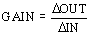

Lead/Lag function block execution
In the Lead/Lag function block,

The following diagram shows the timed response of the block.
You select the way the input signal is processed with parameter configuration and input wiring.
Dynamic compensation
The dynamic compensation that is applied to the IN input is normally determined by the LAG_TIME and LEAD_TIME parameters. You can enter the value of these parameters manually, or another block can provide the value. The compensated input multiplied by the GAIN parameter is the block process variable (PV).
In Auto mode, the PV is normally reflected in the OUT parameter. However, when the PV value exceeds the output limits defined by OUT_HI_LIM and OUT_LOW_LIM, the limit value is used.
When the FOLLOW parameter is active (True), no dynamic compensation is applied and the result of IN multiplied by GAIN is reflected in the OUT parameter.
Balance output
In Man mode, the OUT value can be entered manually. Thus, the dynamically compensated input value shown in PV might not match the current block output. To avoid bumping the output on a mode change from Man or OOS to Auto, a bias value is added to the compensated signal so the resulting value matches OUT.
In Auto mode, the compensated input plus the bias value is the OUT value. The bias value added during the transition from Man or OOS to Auto mode is ramped down to zero over the time defined by the BAL_TIME parameter.